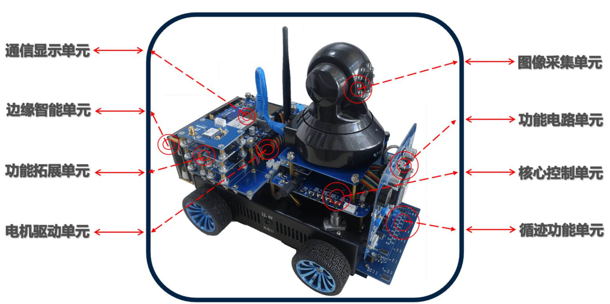
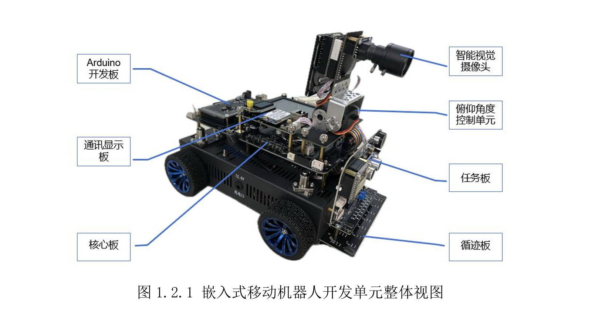
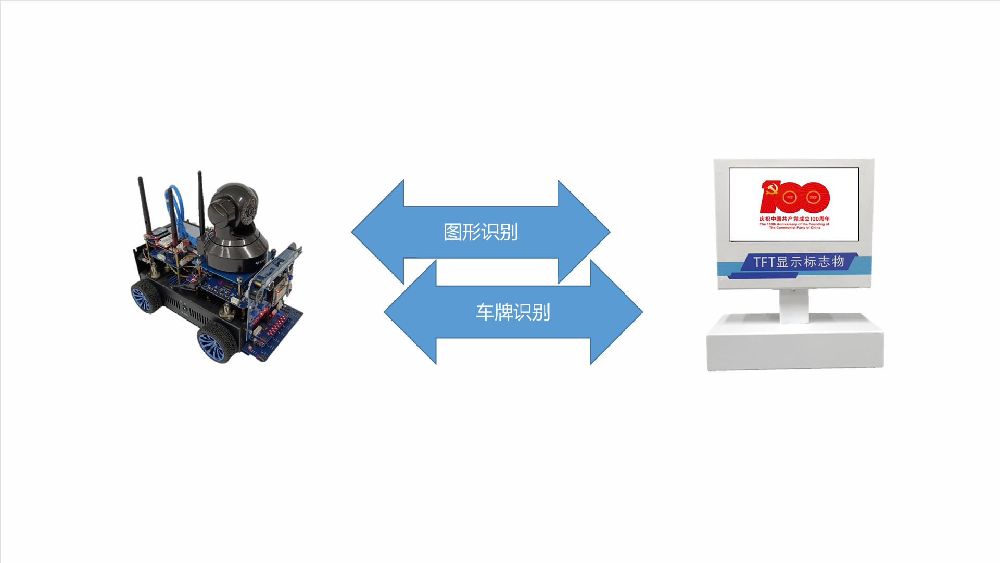
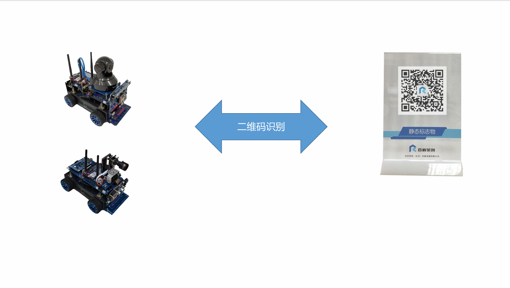
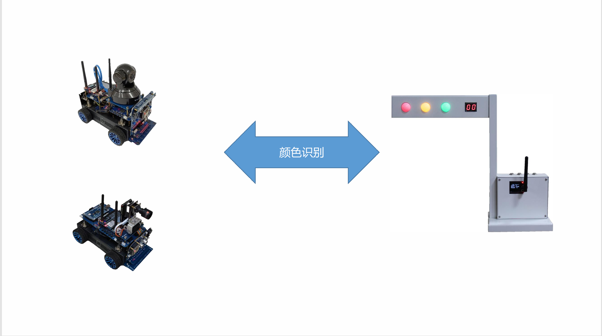

Branch 01
视觉模型训练与数据集迭代
项目里最核心的一条线是识别能力本身。我需要让模型不只是可训练，而是足够稳定地支撑实时场景。
- 利用 Roboflow 进行数据清洗、分类、标注和自动增强，构建 12000+ 标注图片的数据管线。
- 基于 YOLOv8 训练 8 组视觉模型，覆盖 45+ 个识别类别与 9 个识别场景。
- 通过参数微调、训练集迭代和终端适配，将综合识别准确率提升到 90% 以上。
AI / Android
这个项目把视觉识别模型训练、Android 客户端维护、多路传感器接入和跨节点控制链路结合到了一起。 它不是单纯做一个识别 demo，而是把识别结果真正放进可以操作、可以联动的小车平台里。

项目目标是让移动控制端、视觉识别模型和小车感知链路协同工作，形成一个可视化、可操作的智能控制平台。 因为它天然包含模型训练、终端维护、通信接入和交互设计，所以很适合拆成多段内容来展示。
`ppt` 里我把它整理成了更明确的矩阵：基于 YOLOv8 训练 8 组视觉模型，覆盖 45+ 个识别类别，使用 12000+ 标注图片，并最终转换为 TFLite 部署到 Android 端。
我主导了视觉能力全流程重构，使用 Roboflow 建立数据集，并基于 YOLOv8 训练车牌、交通标志、红绿灯、二维码、TFT 屏幕、图形与行人等多组模型。
同时我负责 Android 端底层数据接口维护、视频流与多路传感器信号接收解析，并重构客户端 UI，优化高密度信息面板和实时画框的交互体验。
Branch 01
项目里最核心的一条线是识别能力本身。我需要让模型不只是可训练，而是足够稳定地支撑实时场景。
Branch 02
这个项目不是只看后台结果，前端体验也很关键，所以我对客户端底层和界面都做了整理。
Branch 03
平台真正难的地方，在于模型、视频流、传感器和控制链路要同时稳定工作。
这一页已经换成真实图和真实视频，先展示小车硬件结构，再展示识别结果和功能链路。




这里已经接入小车演示视频，能够直接补足动态控制、识别过程和平台联动的真实性。